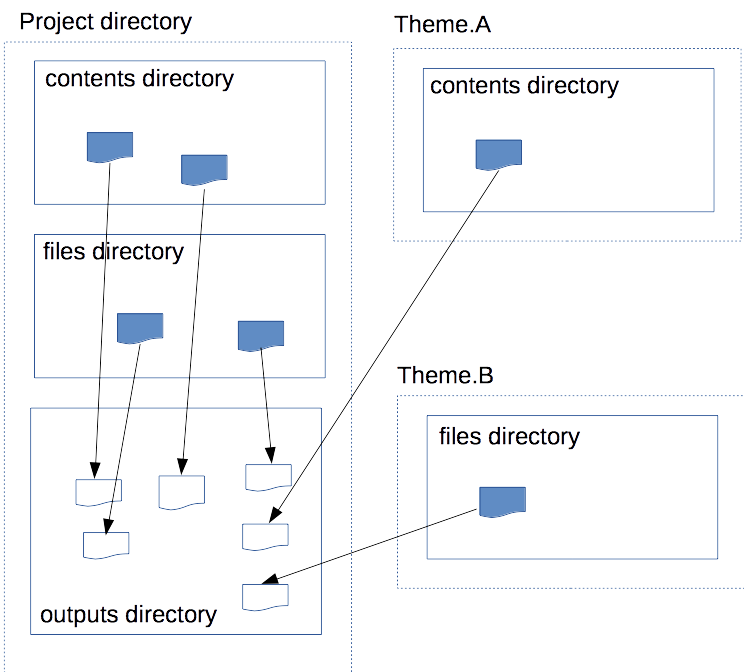

テーマ
テーマは、 サイトのコンテンツやデザインなどをまとめたPythonのパッケージです。テーマに含まれるファイルは、プロジェクトの通常のファイルと同じように outputs ディレクトリにコンテンツとして出力されます。

テーマの使用
テーマは、通常のパッケージと同じようように、PyPIなどから事前にインストールする必要があります。
Install miyadaiku themes with pip
$ pip install miyadaiku.themes.bootstrap4
$ pip install miyadaiku.themes.fontawesome
プロジェクトで使用するテーマは、プロジェクト設定ファイル config.yml の themes に指定します。
config.yml: Using two themes in the project
themes:
- miyadaiku.themes.bootstrap4
- miyadaiku.themes.fontawesome
テーマが別のテーマを使用する場合、そのテーマは再帰的に読み込まれます。また、Miyadaikuの組み込みテーマ miyadaiku.themes.base は、themes に指定されなくとも常に読み込まれます。
テンプレート
テーマに含まれるテンプレートも、プロジェクトのテンプレートと同様に使用できます。
アーティクルのテンプレート名や、Jinja2の import 文などでテンプレート名を指定すると、プロジェクトの templates ディレクトリに続いて、使用中のテーマからテンプレートディレクトリを検索します。
テンプレート名の検索順序については、テンプレート名の解決 を参照してください。
load_package()
テーマパッケージに load_package(site) 関数があれば、起動時に呼び出されます。テーマ内でのデータの初期化などが必要であれば、ここで行います。
sample of __init__.py of theme package
import os
def load_package(site)
# set "os_version" property
site.config.add('/', {'os_version': os.uname().version})